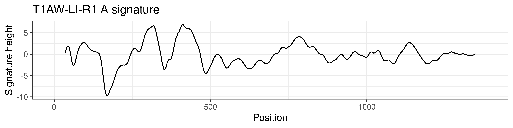
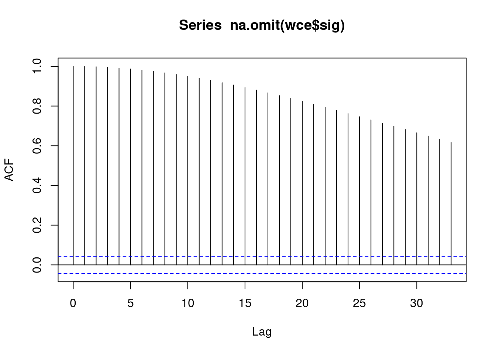
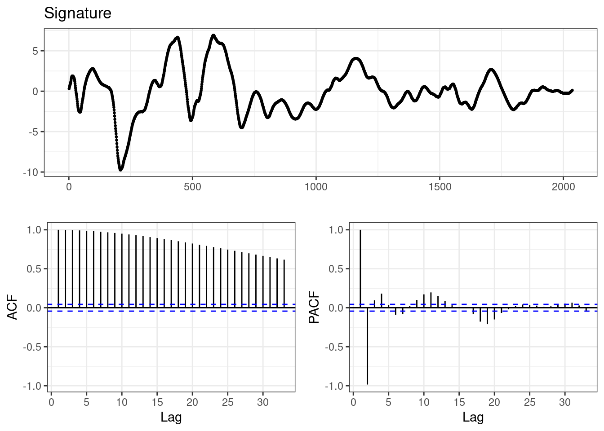
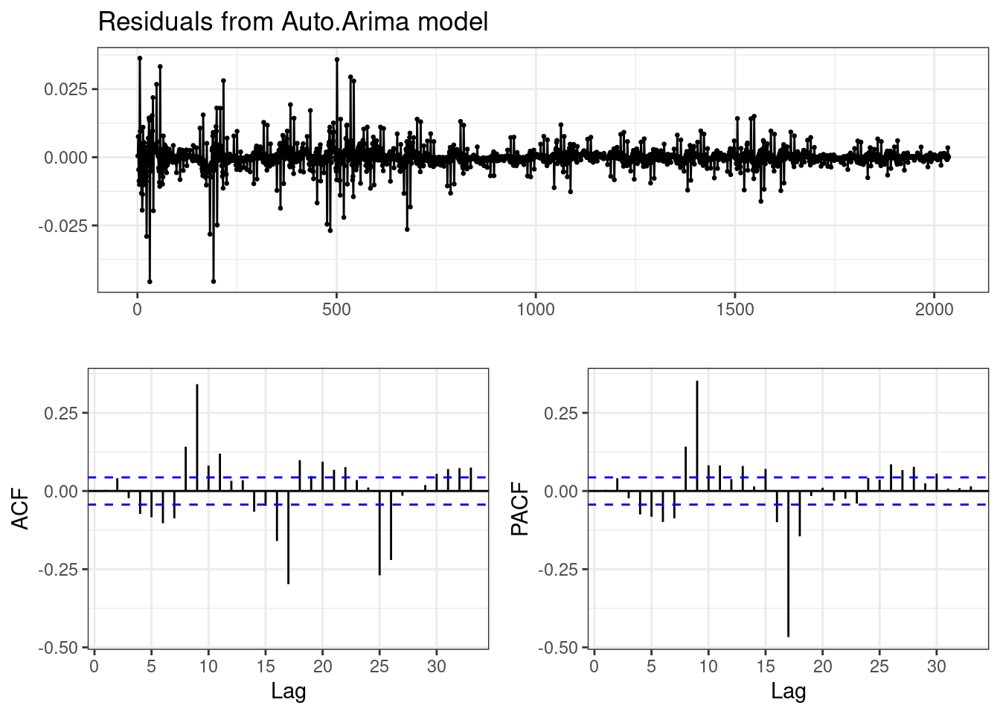

wce <- wire_sigs %>%
filter(id == "T1AW-LI-R1", edge == "A") Time Series
Effective Number of Observations in a Single Series
In order to calculate the number of comparisons performed by an algorithm, we must calculate the effective number of observations. After all, if we use two different microscopes with different resolutions, we will see more detail but still have effectively the same evidence.
Laying this out mathematically, let us assume that we have a series of observations of a physical object of length \(\ell\), \(x_i = {x_1, …, x_n}\) taken at resolution \(\ell/n\).
For instance, consider the cut edge of 16 gauge wire (1.5 mm diameter), scanned at a resolution of 0.645 \(\mu m\). We have 2144 observations spaced at \(0.645 \mu m\) for a total sample length of \(2144*0.645/1000 = 1.38 mm\), which represents the cut edge of the 1.5mm diameter wire, as shown in Figure 1.


No matter how small our resolution, the real-world surface is never more than 1.383 mm in length and the underlying striations are essentially fixed - what changes is what level of detail we can observe. At some point, adding additional resolution doesn’t get us any more information about the striations; thus, we cannot depend solely on \(n\), the number of observations, to tell us how much information is contained in our sequence. In order to correct for this, time series analysts use an effective sample size calculation of \(N^\prime = N \cdot \frac{1-r_1}{1+r_1}\) when there is first-order autocorrelation.
We can test for autocorrelation by looking at the auto correlation function plot, which tests the correlation between \(x_t\) and \(x_{t+i}\), where \(i\) is the order of the autocorrelation function (e.g. the number of positions offset from the observation).
acf(na.omit(wce$sig), type = "correlation")
myacf <- acf(na.omit(wce$sig), plot = F)It is obvious that there is a significant amount of autocorrelation in our striae.
library(lmtest)Loading required package: zoo
Attaching package: 'zoo'The following objects are masked from 'package:base':
as.Date, as.Date.numericwce_ts <- wce %>%
mutate(sig1 = c(NA, diff(sig, 1)),
sig2 = c(NA, diff(sig1, 1)))
model <- lm(sig ~ x, data = wce_ts)
lmtest::dwtest(model)
Durbin-Watson test
data: model
DW = 0.0010693, p-value < 2.2e-16
alternative hypothesis: true autocorrelation is greater than 0The null hypothesis of the Durbin-Watson test is that there is no autocorrelation; we can conclude that there is evidence of autocorrelation in our data.
Our next task is to examine different orders of autocorrelation. We can use the auto.arima function to determine the best class of time series model structure for our data.
library(forecast)Registered S3 method overwritten by 'quantmod':
method from
as.zoo.data.frame zoo df <- dplyr::filter(wce, !is.na(sig))
aamodel <- auto.arima(y = df$sig, stepwise = FALSE, parallel = T)
summary(aamodel)Series: df$sig
ARIMA(3,0,2) with zero mean
Coefficients:
ar1 ar2 ar3 ma1 ma2
2.5305 -2.0762 0.5453 1.0936 0.1489
s.e. 0.0275 0.0549 0.0274 0.0311 0.0304
sigma^2 = 2.008e-05: log likelihood = 8118.7
AIC=-16225.41 AICc=-16225.37 BIC=-16191.7
Training set error measures:
ME RMSE MAE MPE MAPE
Training set -2.316824e-05 0.00447544 0.002328523 0.2069216 0.8551681
MASE ACF1
Training set 0.03659163 0.003427568ggtsdisplay(df$sig, theme = ggplot2::theme_bw(), main = "Signature")
ggtsdisplay(resid(aamodel), theme = ggplot2::theme_bw(), main = "Residuals from Auto.Arima model")
There are multiple ways to calculate “effective sample size” which seem to differ in what level of ARIMA modeling they account for and the underlying method to compute the autocorrelations.
The coda package uses \(ESS = N \frac{\lamda^2}{\sigma^2}\) where \(\lamda^2\) is the variance and \(\sigma^2\) is the spectral density at frequency 0.
coda::effectiveSize(df$sig) var1
25.51493 # Sampling every other point
coda::effectiveSize(df$sig[seq(1, length(df$sig), 2)]) var1
29.99415 # Sampling every 4th point
coda::effectiveSize(df$sig[seq(1, length(df$sig), 4)]) var1
37.70312 Another calculation for first-order autocorrelation (which doesn’t apply here…) is
ar1_ess <- sum(!is.na(df$sig)) * (1-myacf$acf[2])/(1 + myacf$acf[2])\(ESS = N \frac{1 - \rho(1)}{1 + \rho(1)}\) where \(\rho(1)\) is the sample autocorrelation at lag 1. As we have an ARMA(3,2) model, we can’t really use this with a straight face, however, if we did, the result would be 0.5504324… e.g. not reasonable on its face.
I’m going to quit now, but this turns out to be a real pain in the ass. I don’t find 25 or 26 observations to be particularly realistic, but neither do I think .5 observations is realistic.
Useful refs:
https://stats.stackexchange.com/questions/429470/what-is-the-correct-effective-sample-size-ess-calculation
https://imedea.uib-csic.es/master/cambioglobal/Modulo_V_cod101615/Theory/TSA_theory_part1.pdf
https://andrewcharlesjones.github.io/journal/21-effective-sample-size.html